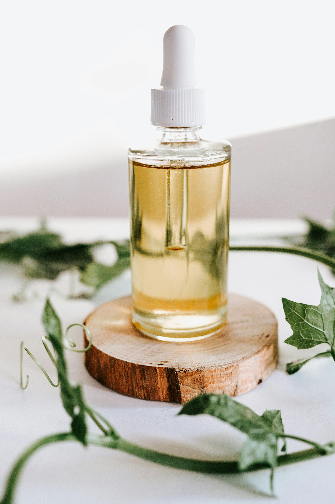

.jpg)
.jpg)
Mais do que
Saúde
Folhas
Alivío
Plantas medicinais são vegetais que possuem propriedades terapêuticas capazes de tratar, aliviar ou prevenir doenças e sintomas físicos ou emocionais. Essas plantas têm sido utilizadas há milhares de anos por diferentes culturas, como a indígena, africana, chinesa e ayurvédica, e continuam sendo valorizadas na fitoterapia — a ciência que estuda o uso medicinal das plantas. Elas podem atuar como anti-inflamatórios, calmantes, digestivos, cicatrizantes, expectorantes, entre outras funções, dependendo da espécie e dos compostos ativos presentes.
Para que as plantas medicinais servem?

As plantas medicinais têm como função principal oferecer propriedades terapêuticas que ajudam na prevenção, alívio e tratamento de diversos problemas de saúde. Elas contêm compostos bioativos que podem atuar como anti-inflamatórios, analgésicos, calmantes, digestivos, cicatrizantes, entre outros efeitos benéficos ao organismo. Utilizadas em forma de chás, óleos, pomadas ou extratos, essas plantas são parte importante da fitoterapia e da medicina tradicional em várias culturas.
Além de seu uso medicinal, essas plantas também desempenham funções sociais e ambientais relevantes. Elas preservam saberes ancestrais, promovem o uso sustentável dos recursos naturais e incentivam práticas de autocuidado mais naturais e acessíveis. Muitas são cultivadas em hortas caseiras ou comunitárias, fortalecendo a conexão entre saúde, natureza e cultura popular.

Benefícios
Tratamento natural de sintomas
O tratamento natural de sintomas utiliza plantas medicinais e recursos da natureza para aliviar dores, inflamações, problemas digestivos, ansiedade, insônia e outros desconfortos sem recorrer a medicamentos sintéticos. Essa abordagem valoriza o uso de ervas, chás, óleos e compressas com propriedades terapêuticas, promovendo bem-estar físico e emocional de forma acessível, sustentável e com menor risco de efeitos colaterais.
acessibilidade
As plantas medicinais são altamente acessíveis, pois podem ser cultivadas em hortas caseiras, jardins ou até em vasos pequenos, tornando o cuidado com a saúde mais próximo e econômico. Essa facilidade de cultivo permite que pessoas de diferentes realidades tenham acesso a tratamentos naturais, sem depender exclusivamente de medicamentos industrializados. Além disso, muitas espécies são encontradas na natureza ou em feiras locais, o que reforça seu papel como alternativa sustentável e democrática para o bem-estar.
menor risco de efeitos colaterais
As plantas medicinais, quando utilizadas corretamente, oferecem menor risco de efeitos colaterais em comparação aos medicamentos sintéticos. Por serem naturais e geralmente menos agressivas ao organismo, elas podem tratar sintomas leves com mais segurança, especialmente em casos de uso tradicional e bem orientado. Essa característica torna as ervas uma alternativa viável para quem busca cuidados mais suaves e integrados ao equilíbrio do corpo.
bem-estar
As plantas medicinais promovem o bem-estar ao oferecerem alívio natural para sintomas físicos e emocionais, como estresse, ansiedade, insônia e dores leves. Seu uso estimula práticas de autocuidado mais conscientes e conectadas à natureza, favorecendo uma rotina mais equilibrada e saudável. Além disso, o simples ato de cultivar e preparar essas plantas pode gerar momentos de relaxamento, presença e reconexão com o corpo e o ambiente.
versatilidade de uso
As plantas medicinais são extremamente versáteis, podendo ser utilizadas de diversas formas no cuidado com a saúde. Elas podem ser preparadas como chás, infusões, compressas, pomadas, óleos essenciais, banhos terapêuticos ou até incorporadas em cosméticos naturais. Essa variedade de aplicações permite que cada planta seja aproveitada conforme suas propriedades e necessidades específicas, tornando o tratamento mais personalizado, acessível e integrado ao cotidiano.
Principais plantas medicinais
- Camomila
Propriedades: Calmante, anti-inflamatória
Usos: Chás para ansiedade, insônia e cólicas - Hortelã
Propriedades: Digestiva, refrescante
Usos: Chás, óleos e alívio de náuseas - Alecrim
Propriedades: Estimulante, antioxidante
Usos: Infusões, banhos e dores musculares - Erva-doce
Propriedades: Antiespasmódica, digestiva
Usos: Chás para gases e cólicas - Babosa (Aloe vera)
Propriedades: Cicatrizante, hidratante
Usos: Pomadas, cremes e queimaduras - Boldo
Propriedades: Hepatoprotetor, digestivo
Usos: Chás para fígado e má digestão - Capim-limão
Propriedades: Calmante, analgésico
Usos: Chás para estresse e dores leves - Malva
Propriedades: Anti-inflamatória, emoliente
Usos: Gargarejos e problemas respiratórios - Guaco
Propriedades: Expectorante, broncodilatador
Usos: Chás para tosse e bronquite - Arnica
Propriedades: Anti-inflamatória, analgésica
Usos: Pomadas para contusões e dores musculares